Development items and samples
Items 1 to 4. E-mail 1.
1Blank style, description and color go both ways
From the e-mail“Can we make the below blank information start pulling from the art request? Can they communicate back and forth? (If I change the info on the development item it changes on the art request and vice versa).”E-mail 1, Salesforce edits
Now: Blank Style Number and Description and Blank Color now stay the same on the art request and its development items. A change on either side shows on the other, and a change on the art request shows on every development item linked to it. A blank never overwrites a value. A new development item with empty blank fields fills them from its art request. Development items that already exist are not filled in; the two sides start matching when one of these fields is next edited.
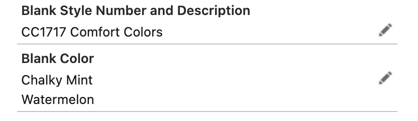
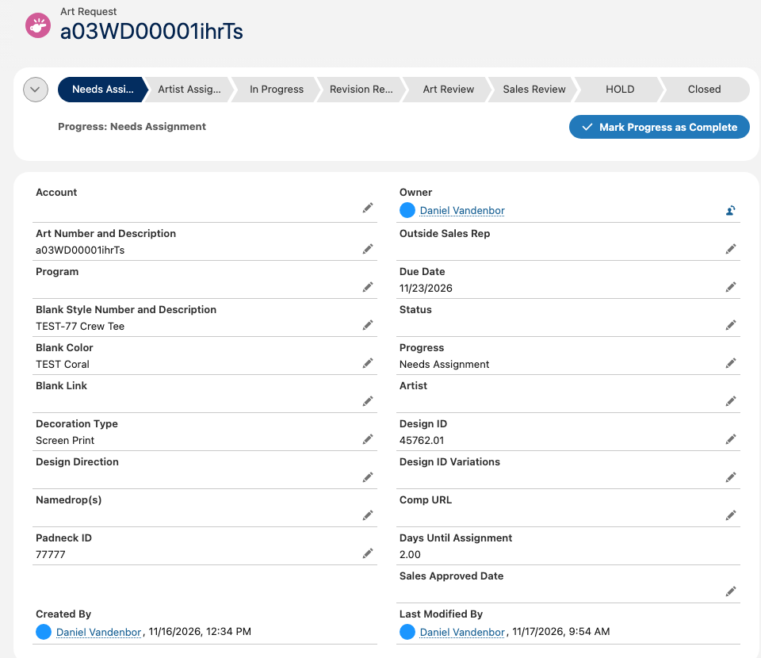
2Design ID and Padneck go both ways
From the e-mail“Same with the Design ID and Padneck sections. Can this communicate back and forth between art request and design ID?”E-mail 1, Salesforce edits
Now: Design ID and Padneck follow the same rule. The development item keeps only the first five characters of the Design ID, before any “.”, so a request Design ID such as 66666.01 shows as 66666 on the item. An item that is unchanged never overwrites the full Design ID on the request.
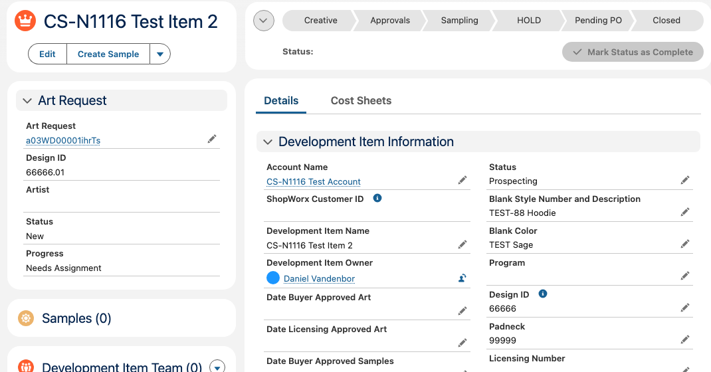
3Create Sample without Shopworx Order Number
From the e-mail“When we're on the development item and hit "create sample" can we remove the "Shopworx order number" section from this screen”E-mail 1, Salesforce edits
Now: The field is gone. The screen asks for Due Date, Quantity, Where to Purchase and Size to Order.
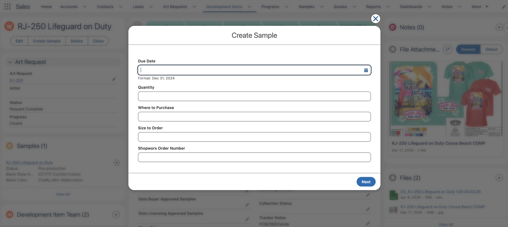
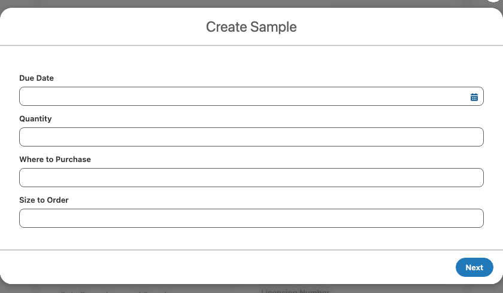
4New samples start as NEW - To Be Entered
From the e-mail“It looks like when we create a sample it automatically puts the status in "Pre-production". Can we have it not do that and we can have it in "NEW - to be entered"”E-mail 1, Salesforce edits
Now: A sample made from Create Sample now starts with the status NEW - To Be Entered.
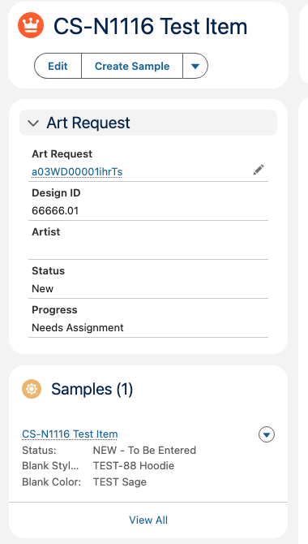
Cost sheet
Items 5 to 9. E-mail 1.
5Comp image updates on a Draft sheet
From the e-mail“It looks like the comps don't update if they change, even if the cost sheet is still in "draft". Can we have the comp image update if it does in the development item?”E-mail 1, Salesforce edits
Now: A cost sheet that is still in Draft shows the development item's current comp. A sheet past Draft keeps the comp it already has. The comps below are plain test pictures, not artwork.
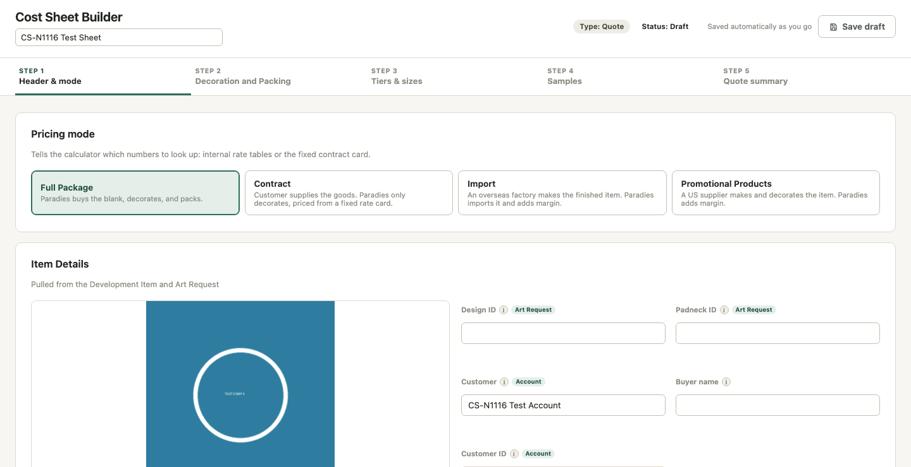
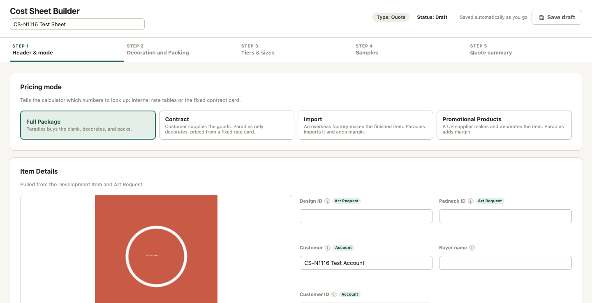
6Delete a production sheet with shipped pieces
From the e-mail“One of us received the following error when trying to delete a cost sheet (when hitting delete cost sheet on this screen it did nothing)”E-mail 1, Salesforce edits
Now: A production sheet with order quantities can now be deleted. Before deleting, the dialog says how many shipped pieces are recorded from orders and that deleting also deletes those shipped numbers. Cancel closes the dialog with nothing deleted.
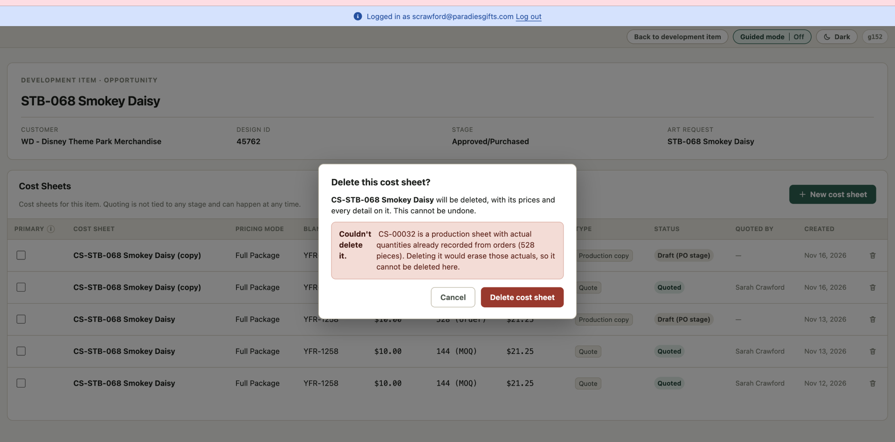
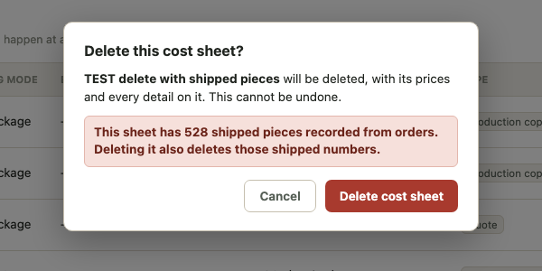
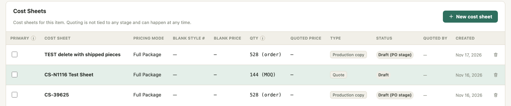
7Charge customer for shipping
From the e-mail“"Charge customer for shipping" should actually NOT populate the customer shipping account. If we charge the customer for shipping that means that Paradies will ship the item and we will add the charge to their invoice.”E-mail 1, Salesforce edits“Can toggling this on remove the customer shipping account # box and add to the PDF created a note that we must charge the customer for shipping?”E-mail 1, Salesforce edits
Now: Turning the switch on hides the Customer shipping account # box and clears any saved number. The internal PDF adds the line “Charge the customer for shipping.” The customer PDF has no shipping note.
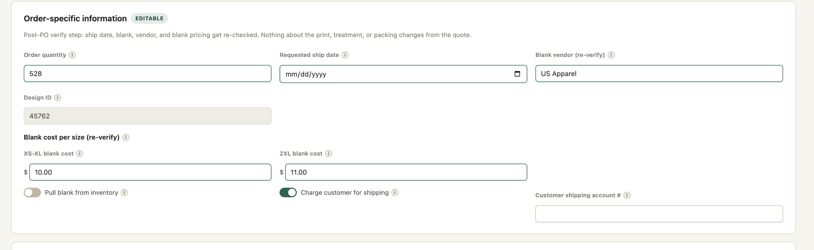
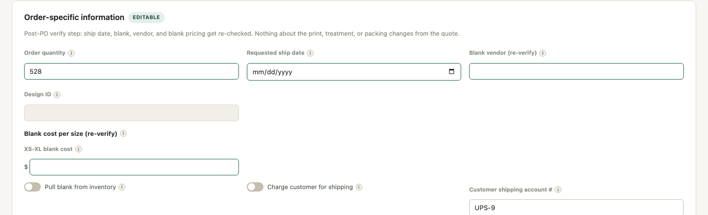
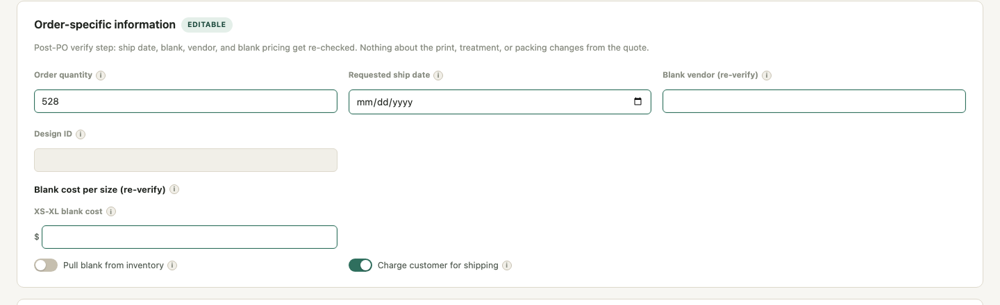
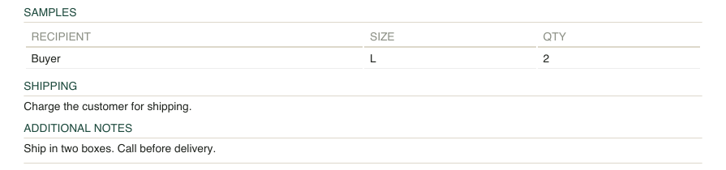
8PDF columns: Location, Treatments, Labeling on its own row
From the e-mail“On the generated PDF can we move "labeling" to its own row? Can we also add "Location" where "treatments" is now and move "treatments" to where "labeling" currently is?”E-mail 1, Salesforce edits
Now: The decoration table on both PDFs now reads Type, Detail, Location, Treatments, with Labeling on its own row under the table. Prices, the shipping note and Additional notes stay on the internal PDF only.
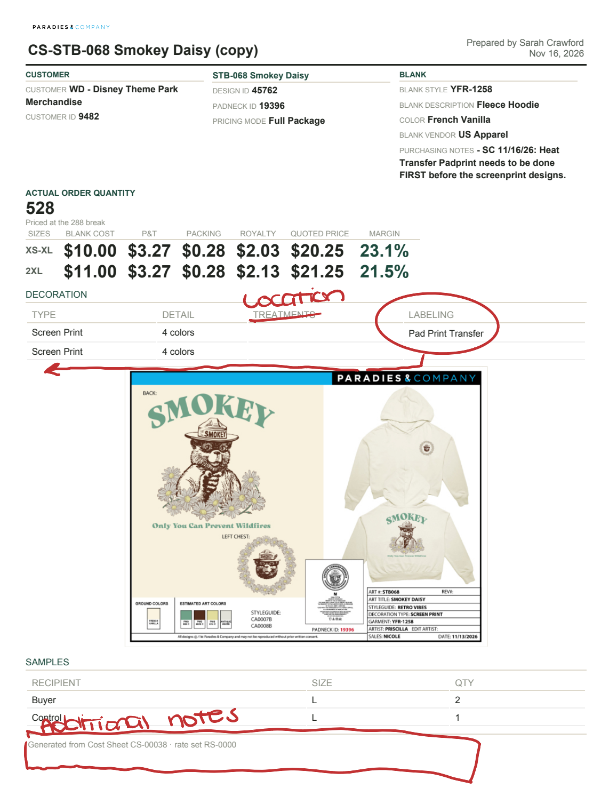
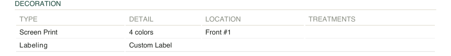
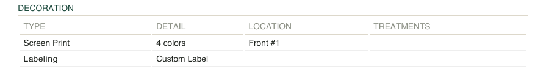
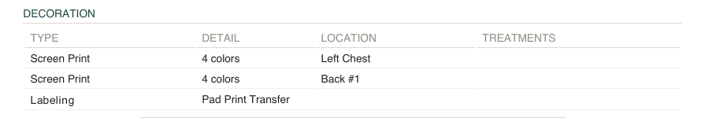
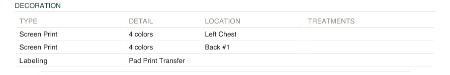
9Additional notes under Samples
From the e-mail“We'd also like another "additional notes" section underneath the samples area if we need to add any other special notes.”E-mail 1, Salesforce edits
Now: The builder has a new Additional notes box on the first step. The internal PDF prints it as an Additional notes section under Samples. The section stays off the PDF when the box is empty, and it does not print on the customer PDF.
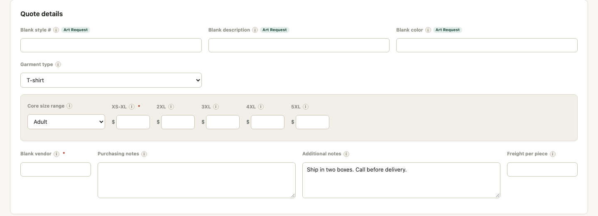
Cost sheet error for one user
Item 10. E-mail 2.
10“No such column Active__c”
From the e-mail“Ashton (Cc'ed on the email) is having issues when creating cost sheets. She receives the following error message:”E-mail 2, about Ashton“I'm unable to replicate this error on my computer! It looks like it might be user specific. Any chance you can help?”E-mail 2, about Ashton
Now: Price rules now load the same way for every user, so the message no longer depends on who is signed in. Price rule notes stay private. The shot below is a user who has the Cost Sheet User permission set, opening and moving through a cost sheet with no error. That user also holds the Cost Sheet Builder and Rate Admin sets: a test user with only the Cost Sheet User set could not be created here. An automated test of this fix also passed in the live system.
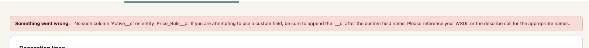
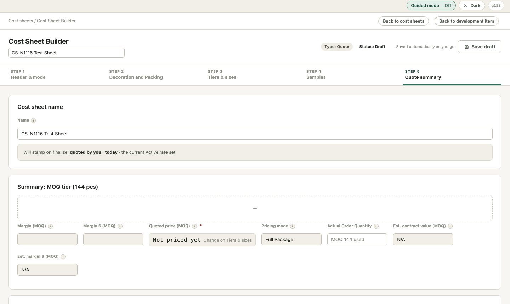
Create Sample without approved art
Item 11. E-mail 3.
11No error when art is not approved
From the e-mail“When creating a sample on a development item that doesn't have "art approved" it gives us this error:”E-mail 3“We probably did this on purpose a while ago but can we actually change it so it doesn't do that now?”E-mail 3
Now: The approved-art requirement for samples is switched off, so Create Sample works. If a sample still cannot be created for another reason, a plain message appears in place of the generic error.
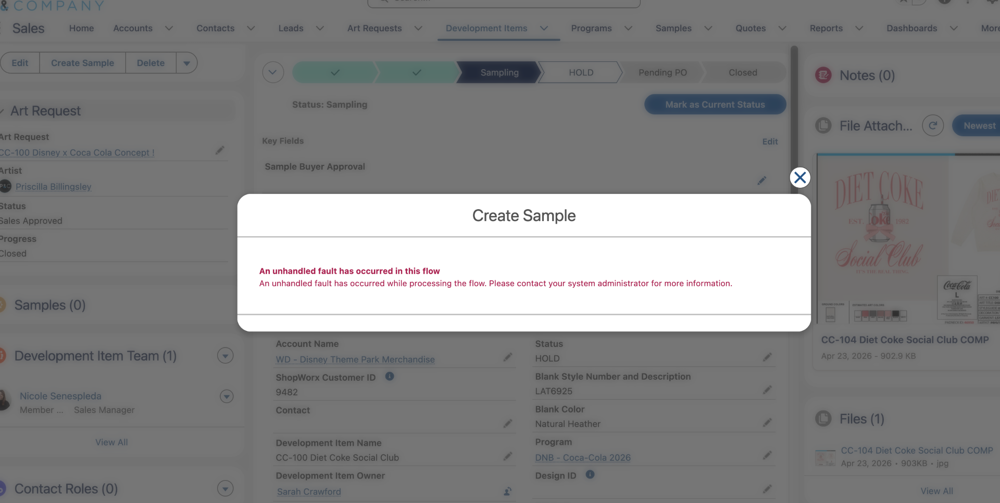
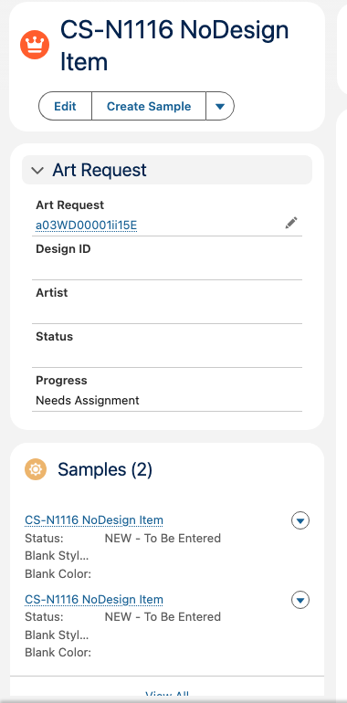